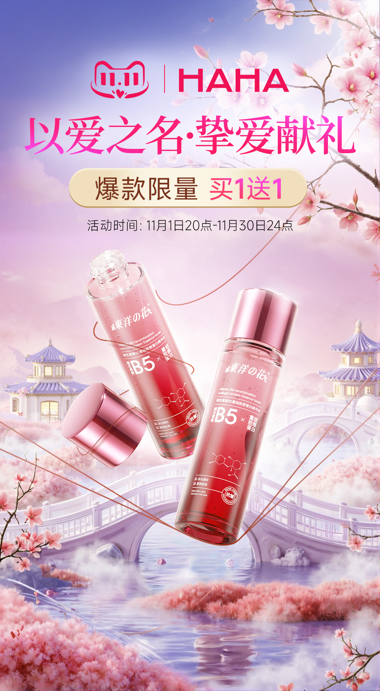
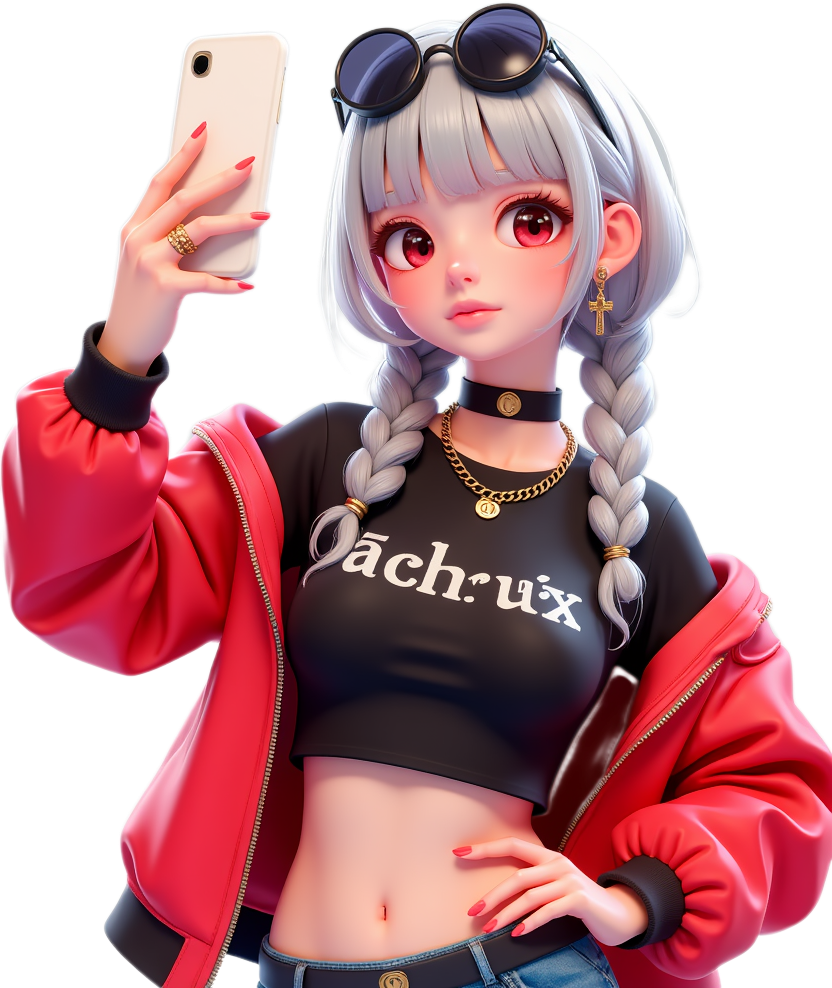
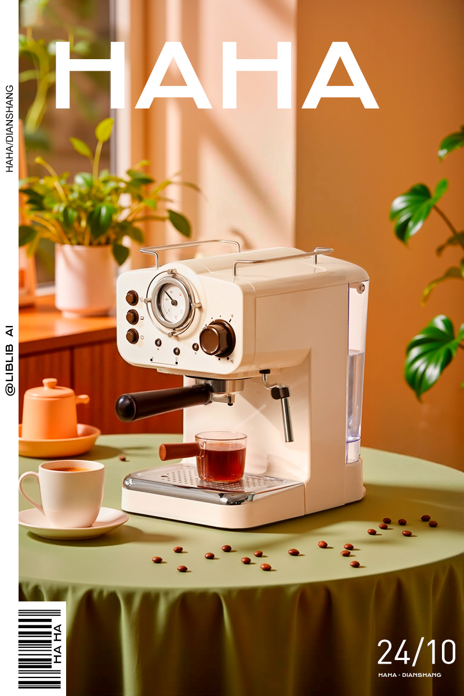
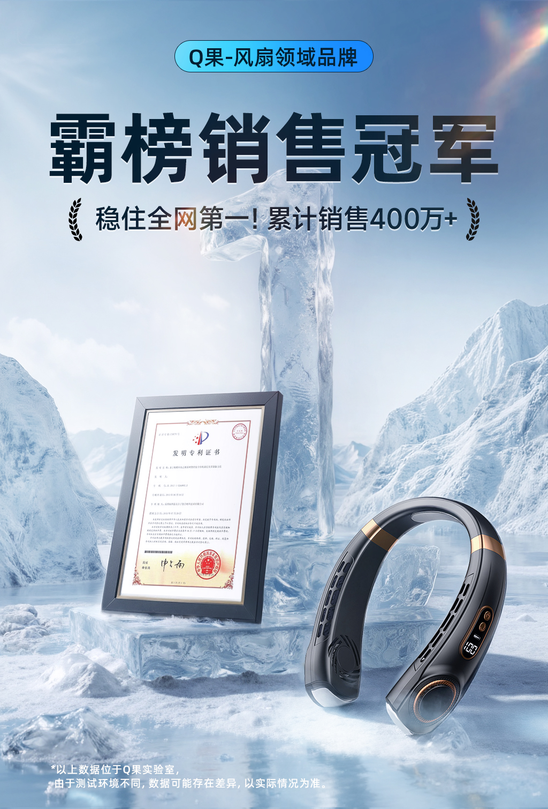
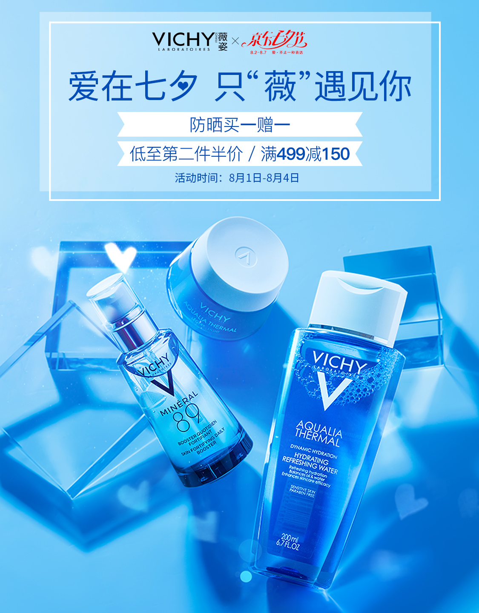
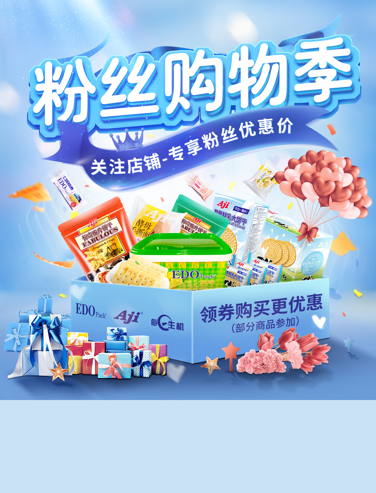

AIGC视觉
AI Product Key Visual
以生成式视觉构建产品氛围，适用于美妆、消费品与品牌主视觉。

Profile
目前作品覆盖 AIGC 视觉、电商主图、活动 KV、详情页与品牌延展。首版网站先以现有作品和可见简历信息搭建展示基础，后续可继续补充完整履历、项目说明和真实联系方式。
Selected Projects
以大图保留作品的视觉冲击力，先建立完整展陈节奏，后续可继续扩展为项目详情页。

以生成式视觉构建产品氛围，适用于美妆、消费品与品牌主视觉。

将产品质感、空间光影与商业陈列合成到统一画面中。

面向社媒与电商场景的轻科技产品视觉表达。

结合节日情绪、产品露出与视觉叙事的营销海报。

面向大促与商品转化的主视觉系统，强调信息层级与记忆点。

从线稿、视觉扩展到详情页落地的整套产品表达。
Advantages
能力表达保持克制，把重点放在视觉判断、商业落地和AI协同效率上。
熟悉用AI完成概念探索、视觉扩图、产品场景合成与多版本方向验证。
能够围绕卖点、氛围和传播场景搭建完整主视觉，兼顾品牌感与转化效率。
擅长信息层级、商品卖点拆解、长图节奏与视觉一致性控制。
将单张主视觉延展到海报、轮播、详情、社媒与活动素材中。
在高级感、克制感和商业明确度之间保持平衡，避免堆砌式设计。
可结合传统设计工具与AI工作流，快速推进从概念到成稿的完整链路。